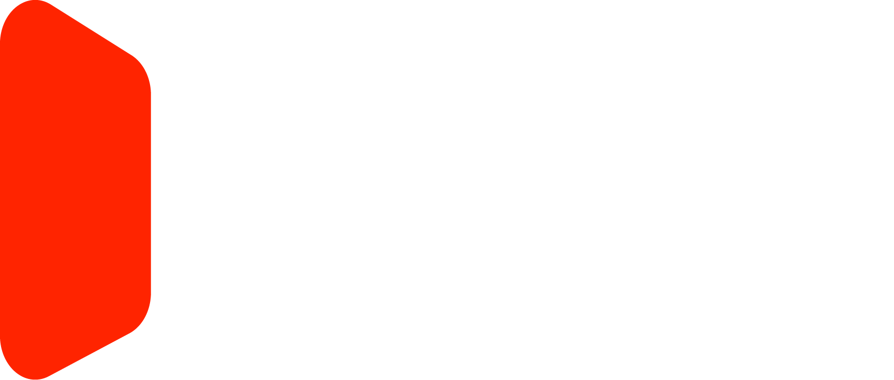

Estatística sem contexto
Você vê o K/D de cada um, mas não vê que o controlador está caindo há três semanas, nem que o time perde quase tudo em Lotus.
Para comissões técnicas e gestores de Valorant
O TAB organiza os números do seu elenco e coloca a gestão do time no mesmo lugar: performance, pick/ban, agenda, advertências e relatórios.
Versões Free e Pro. Os valores a gente apresenta na demo, sem compromisso.
Em conformidade com as políticas de API da Riot Games.
3 jogadores precisam de atenção esta semana · 1 em alta
Dados fictíciosCaiu de Imortal 1 para Ascendente 3 no ato atual.
ACS de 171 nas últimas 5 partidas; média do ato: 216.
Conta Riot sem sincronização; histórico individual pendente.
ACS de 287 nas últimas 5 partidas; média do ato: 252.
Usado pela comissão técnica da NewMode em competição.
O problema
Estatística de jogador qualquer site mostra. O que ninguém mostra é o time: quem caiu, em que mapa, desde quando, e o que a comissão fez a respeito.
Você vê o K/D de cada um, mas não vê que o controlador está caindo há três semanas, nem que o time perde quase tudo em Lotus.
Agenda na planilha, advertência no Discord, log de scrim no caderno de alguém. Para juntar tudo antes de uma decisão, alguém perde horas.
O que a comissão decidiu, e por quê, some no chat. Quando o resultado chega, ninguém lembra em que dado a escolha se apoiou.
O TAB junta as três coisas: os números, a rotina do time e o registro do que foi decidido.
O produto
As telas abaixo são do TAB, recriadas com dados fictícios. Na demo, você vê o produto rodando.
O TAB compara as últimas partidas de cada jogador com a média do ato e aponta quem está caindo, quem está em alta e quem é o mais consistente.
Últimas 5 partidas vs. média do ato.
A evolução semana a semana de cada jogador contra a média do elenco, e um duelo 1v1 interno quando você precisa decidir entre dois nomes para a mesma função.
O winrate do time por mapa, com scrims e oficiais, e o de cada jogador na ranked. O TAB sugere o que pickar e o que banir a partir das partidas da própria equipe.
✓ PICK: Ascent, Haven ✕ BAN: Abyss, Lotus
Regra: pick com 60% ou mais de vitórias e 3+ jogos; ban abaixo de 45%.
O TAB lê as partidas e os logs da equipe e propõe pontos de atenção. Nada vira conclusão sozinho: cada insight passa pela revisão da comissão, que aprova, descarta e anota o contexto.
Em Abyss e Lotus a equipe venceu 3 de 11 partidas no ato. Revisar utilitários e retakes antes de atribuir causas individuais.
Fonte: partidas e logs da equipe ativa. Confiança e causalidade exigem revisão humana.
Relatório do período da equipe, com aproveitamento, MVP e os insights que a comissão aprovou. Ou o relatório individual de um jogador, com desempenho, histórico ranqueado e advertências. Os dois saem em PDF.
26 partidas da equipe · 15 vitórias · 58% de aproveitamento
ACS 289,4 na semana (média do ato: 252) · KDR 1,71 · 5 partidas
| Data | Modalidade | Mapa | Placar |
|---|---|---|---|
| 22/10 | Oficial | Ascent | 13 : 8 |
| 21/10 | Scrim | Lotus | 9 : 13 |
| 20/10 | Scrim | Haven | 13 : 11 |
Para quem gere a organização
Agenda, logs de treino e scrim, advertências e o histórico de quem fez o quê. Para uma equipe ou para todas as equipes da organização.
O dono da organização vê todas as equipes, cria line-ups novas e delega cada uma a um Admin. O Admin gere só a equipe que é dele.
Perfis de acesso
Advertências em aberto, aproveitamento nos scrims da semana e registros que ainda faltam fechar. Um clique leva ao detalhe.
Treinos, scrims, oficiais e reuniões num calendário só. Depois de cada sessão, o log registra o que foi feito e o próximo foco.
Advertências por jogador, com gravidade e histórico. E uma trilha de auditoria com as ações relevantes, para saber quem fez o quê e quando.
| Data/hora | Perfil | Ação | Onde |
|---|---|---|---|
| 23/10 18:42 | Admin | Criar sessão | Agenda |
| 23/10 19:15 | Coach | Publicar log | Logs de treino/scrim |
| 24/10 09:10 | Admin | Revogar consentimento Riot | Integração |
Faça a conta
Responda rápido. O resultado aparece na hora, sem cadastro.
Preencha pessoas e horas por semana para ver a conta.
Sua comissão gasta — por mês juntando dado em vez de analisar.
Isso equivale a — de trabalho por ano.
E isso sem contar o que não aparece na conta: a decisão tomada com dado pela metade.
Agendar uma demoConsidera 4,33 semanas por mês e jornada de 8 horas por dia. Você pode mudar os números acima a qualquer momento.
Anti-intriga e dados
O jogador vê os próprios números, não o ranking do vestiário. E a plataforma só trabalha com dados do seu próprio elenco, com o consentimento de cada jogador.
| Perfil | O que acessa |
|---|---|
| Owner | Toda a organização e todas as equipes. Cria equipes e nomeia os Admins. |
| Admin | A equipe atribuída a ele: elenco, agenda, logs, advertências, configurações e auditoria. |
| Coach | A rotina técnica da equipe: performance completa, relatórios, AI Insights, elenco e logs. |
| Player | Só os próprios números, a própria agenda e as próprias advertências. Sem rankings internos, médias do elenco ou dados dos colegas. |
Contas Riot do elenco
Dados fictíciosQuem usa e o mercado
[TEXTO DO COACH]
[FALA LITERAL DO VICTOR GOOSSENS, TRADUZIDA]
[Original em inglês]
A fala é sobre o mercado de esports. Victor Goossens e a Team Liquid não têm relação com o TAB.
Como começar
Você conta como o seu time trabalha hoje. A gente mostra o TAB rodando e qual plano faz sentido.
Cadastre a organização, as equipes e os jogadores. Cada jogador conecta a própria conta Riot, com consentimento.
Partidas, agenda e logs entram no TAB. A comissão acompanha os alertas e leva os relatórios para a reunião.
Planos
Os valores a gente apresenta na demo, de acordo com o tamanho da sua organização.
Founder customers: as primeiras organizações a usar o TAB têm condições especiais. A gente conta na demo.
Perguntas frequentes
O TAB tem um plano Free e um plano Pro. Os valores do Pro a gente apresenta na demo, porque dependem do tamanho da organização e de quantas equipes vão usar. As primeiras organizações têm condições especiais de founder customer.
Overview da equipe, gestão do roster, agenda e os dados básicos da equipe, já organizados num lugar só.
Sim. O TAB segue as políticas de API da Riot Games: os dados de partida vêm das contas dos próprios jogadores do elenco, conectadas com o consentimento de cada um, que pode revogar a qualquer momento.
Não. O TAB trabalha só com o seu próprio time. A plataforma não consulta, compara nem exibe contas de jogadores de outras equipes.
Não. No perfil Player, cada jogador vê só os próprios números, a própria agenda e as próprias advertências. Rankings internos, notas da comissão e estatísticas dos colegas não aparecem.
Não. A IA sugere pontos de atenção a partir das partidas e dos logs da equipe. A comissão revisa, aprova ou descarta, e só os insights aprovados entram nos relatórios.
Sim. A organização pode ter várias equipes (principal, academy e outras). O Owner vê todas e cada Admin gere a equipe que é dele.
Hoje, só Valorant.
Ainda estamos formalizando a política de exportação e exclusão. Pergunte na demo: a gente explica como funciona hoje.

Agende uma demo e veja o seu elenco organizado num lugar só.
A gente responde no e-mail que você informou para combinar o melhor horário da demo.